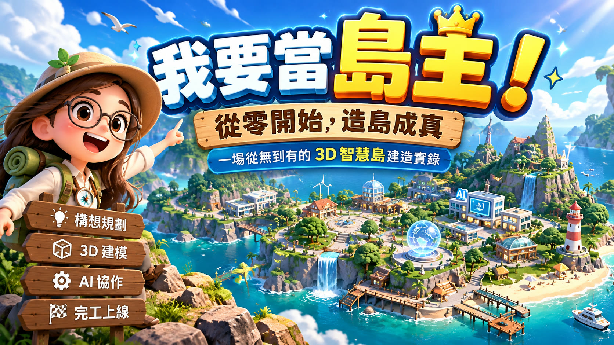
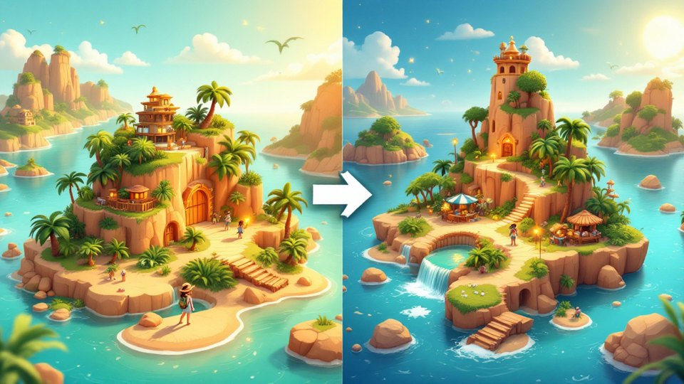

從零開始，造島成真
填好表格就能得到造島包，交給 AI 蓋出可以逛、可以玩的 3D 島嶼網站；學會第二次更新，再用 Godot 做出真正能玩的 3D 島嶼作品。

第一篇用造島工坊與 AI 做出網頁島並學會更新；第二篇用 Godot 做出能玩的 3D 島嶼作品。每個單元都有電子書、成品觀摩、資源下載與圖解教學。
先逛完成品，再看懂從生成器到上架的整條流程
介面、六個步驟、草稿與範例、即時預覽怎麼操作
12 種島型怎麼挑、RPG 與生活感模式、基本資料怎麼填
一列一座島、Excel 匯入、放進講義、請 AI 上網整理
島形、精緻度、動物、點綴、電影運鏡與功能
看懂造島包裡每個檔案，和給 AI 的那段指令
AI 提問、規劃、實作、照驗收清單測試、上架

更新包疊合上一版，只改要改的、網址不變
動態詞彙寫提示詞＋一句話改造
這幾件事在家裡先做完，課堂上才不會卡在安裝。
造島實作